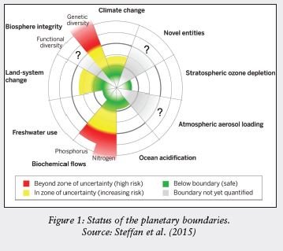

A pale blue dot and our collective future: Humanity at crossroads
The earth has existed for more than 4.5 billion years. The evidence of the earliest life form on the planet goes back to 3.7 billion years signifying a living planet for the bulk of its geological history. During this unfathomably eventful period, life has evolved from the simple to the complex despite facing at least five events of mass extinctions within a geological blink of an eye. The most extreme of such events, called the Permian- Triassic extinction, occurred about 250 million years ago and led to a decline of 96 percent of marine species and 70 percent of land species. Despite leaving an indelible mark on the planet, extinction events have not been able to wipe out life from the planet. Life, albeit in its most simple and rudimentary form, has always found a secure corner of the planet to seek refuge during the period of crisis and bounce back with a remarkable degree of biocomplexity once the inhibiting conditions ceased.
However, what has remained constant is that after each of these existential threats to life on the planet, the composition of species has never remained the same again. Whenever these reset buttons have been pressed, older species have faded and new species have emerged to fit the changed ecological niches. The dawn of the Anthropocene has placed humans as the nerve centre of the planet. As a geological marker of this new epoch – Anthropocene, the ubiquitous plastic has emerged as a reliable indicator, registering a global presence and forming a distinctive stratum. Our collective activities have substantially altered the surface of the Earth, its atmosphere, oceans and processes, often to the detriment of other life forms with whom we share the planet. Faced with another existential crisis, it is worthwhile to ponder what would a sixth mass extinction event hold for the future of humanity?
Ecosystems in peril
At the threshold of yet another World Environment Day and the UN Decade on Ecosystem Restoration (2021-2031), it is appropriate to remind ourselves that the planet is currently undergoing its sixth mass extinction. Only this time there are no natural causes behind this global environmental change and resultant loss of species diversity on the planet. Its most intelligent inhabitant has pressed the reset button for itself and all life forms with severe and irreversible consequences. As it has happened in the past, life will again recuperate after a geological hiatus but we will certainly perish as would other complex life forms on the planet. Therefore, notwithstanding the apparent disdain for being contrary to popular altruistic notions of magnanimity, it must be stated that climate action and the protection of earth’s biological diversity is a selfish human endeavour. Our best efforts to hold ourselves separate from nature and adopt an anthropocentric perspective to make sense of the complexities of the natural world has not fructified.
We remain dependent on the natural world in various ways. Healthy ecosystems can be understood as factories of the natural world providing us with various goods and services that make it possible for us to exist in the form and manner that we do. These can range from the material benefits that we obtain from the ecosystem (provisioning services like food, freshwater, fibre etc.) to the various forms of regulatory attributes that enable habitable conditions for us (regulating services like flood and erosion control, climate regulation, water purification etc.). We may also draw our cultural identity or spiritual well-being from nature signifying the cultural services of ecosystems. Additionally, underlying all of these, are the supporting services that constitute the ecosystem processes and functions that enable the delivery of the other services (nutrient recycling, soil formation etc.). This interdependence on natural ecosystems is immense and intricate and consistent with the way other life forms also depend on each other and their natural environment through a network of interdependent systems – an ancient balancing act.
With the global degradation of natural ecosystems, we stand vulnerable to the changing conditions on the planet and disruption of the ecosystem services that we have been deriving from nature. To visualise the same from an anthropocentric perspective, the concept of planetary boundaries is a useful tool. It suggests that there are nine planetary boundaries within which humanity can continue to thrive but crossing these boundaries would increase the risk of abrupt, large largescale and irreversible environmental changes (Ref to Fig.1). As per estimates in 2015, four such boundaries have already been crossed including climate change and biosphere integrity (with partial confirmation) while the status of three boundaries including that of novel entities such as plastics remains unconfirmed.2 It must be borne in mind that climate and biosphere integrity provide overarching systems within which the other boundary processes operate. Large-scale changes in either of them or both could push the Earth system out of the Holocene state in a rather quick manner for most life forms to adapt – particularly complex ones like humans. Needless to say, we are living in perilous times. Despite our knowledge of how seemingly affluent societies, such as the Mayan or Egyptian, have perished due to the disharmony with their immediate natural surroundings, do we have the appetite to learn from the past to secure our future?
The India story
The world looks at India for a potential template that could be followed by all other economies in transition. As a champion of the 2030 Agenda for Sustainable Development, India represents the same issue that is currently faced by numerous countries in the global south. Representing one-fifth of humanity, the country has a population that is young, dynamic and aspirational. Despite a certain demographic dividend, it faces multitudinous challenges of keeping this population healthy, providing quality education, managing rapid urbanisation and undertaking its share of climate action as a part of the global community. The all-important challenge that currently underpins many of the other ones is to lift this burgeoning population out of poverty through hard infrastructure while balancing the needs of the ecosystems.
So far, it does appear that India has been doing exceptionally well on the front of climate action. It has achieved two of the three targets that it had pledged to in the Paris agreement which seeks to limit the average global temperature rise to well below 2°C above preindustrial levels and preferably within 1.5°C. India has already reduced its emission intensity per unit of GDP by 21 percent and is well within the course to meet its target of 33 to 35 percent reduction from the 2005 emission intensity of GDP by 2031. Moreover, the share of non-fossil fuel sources in the cumulative power generation capacity is already 38% – just 2 percent short of its conditional target for 2030. Even on the third commitment to creating a cumulative carbon sink of 2.5 to 3 billion tonnes of carbon dioxide equivalent, India seems to be making progress, albeit at a woefully slow rate, by registering an increase in the forest cover by 2.9 percent between 2011 and 2019. Despite these encouraging pieces of evidence testifying climate action, it must be pointed out that it may not lead to the restoration of ecosystems for harmonising the relationship that we share with nature.
Ecosystems are more than just geographical units; they are a functional system unit comprising of autotrophs and heterotrophs that are linked by appropriate energy flows, nutrient cycles and storages. Such arrangements are arrived at over a considerably long period. Merely, planting trees through compensatory afforestation or creating waterbodies would not be able to replicate an ecosystem that used to exist in all its functional glory. This becomes particularly concerning when one considers the fact that the government has pushed for the creation of infrastructure in the ecologically fragile parts of the country leading to habitat fragmentation and destruction. From the high mountains in the Himalayas to the coastal zones dotted with mangroves belts or even the mineral-rich hinterland in the country, resource extraction and pollution has continued at the cost of collapsing ecosystems.
The most important and perhaps the only bulwark against such acts – the Environment Impact Assessment (EIA) rules in India too stand diluted as the current administration has initiated a good faith doctrine that permits industries to self-report their environmental impacts. In its most recent avatar, the 2020 draft EIA has further sought to enable post facto clearance of projects and the dilution of public consultation. Evidence from the State of Environment Report, 2021 by the Centre for Science and Environment (CSE) have pointed out that between 2009 and 2018, India’s air, water and land have become more polluted. The Central Pollution Control Board has noted that out of 88 major industrial clusters in the country, 35 have recorded overall environmental degradation while 33, 45 and 17 industrial complexes have contributed in a major way to the pollution of air, water and land respectively. All this despite a regulatory framework that is in place to control and curb pollution in the country.
Alternate thinking
It is evident from the discussions above that environmental governance in the country requires an overhaul. The global community is set to issue a clarion call to prevent, halt and reverse the degradation of ecosystems in every continent and ocean with the beginning of the UN Decade on Ecosystem Restoration on World Environment Day, 2021. The current paradigm anchored on an anthropocentric worldview has proven to be inadequate to address the entire range of threats that affect ecosystems globally. Mere optics of tree planting or allowing a certain quantum of water to remain in river channels as environmental flows along or even wastewater treatment are woefully inadequate. Almost as a counter to the dominant paradigm of an anthropocentric approach to environmental governance, an ecocentric approach has been steadily rising that prioritises nature’s right to flourish and may hold a certain degree of promise.
Commonly known as Rights of Nature (RoN), it is a recognition that ecosystems have the same rights as humans to exist, persist, maintain and regenerate their vital cycles. Moreover, it also asserts that the responsibility to enforce these rights on behalf of nature lies with us. To uphold such rights, either a legal guardian needs to be appointed for looking into the interest of the ecosystem or issues can be brought to the attention of the judiciary by concerned citizens. The RoN framework is a clear deviation from conventional environmental protection in the sense that communities can work outside the regulatory system to establish legal rights thereby disproving the long-held notion – “communities can’t prohibit what state law permits”. India too had its share of participation in this global environmental movement and emerging jurisprudence when the Uttarakhand High Court passed a judgement in 2017 recognising the Ganga and the Yamuna as ‘living entities’. This was subsequently stayed by the Supreme Court but the move has already set the ball rolling and debates have ensued on various facets of RoN and its applicability in the Indian context.
Another interesting development has been the emergence and coming to the prominence of Green parties worldwide. These political organisations may follow a coherent ideology that not just includes environmentalism as its cornerstone but also social justice, consensus-based decision, nonviolence, sustainability and respect for diversity – all enshrined in the Global Greens Charter that was signed by Green parties of 72 countries in 2001. Green parties counteract the usual dismissive and accommodative strategies of mainstream parties on issues that involve environmental security. Presently, the ideology of Green parties holds a disproportionately high affinity amongst young and educated voters and attract greater support in countries that have high levels of economic development and low levels of unemployment. However, it cannot be ruled out that their acceptance amongst the larger populace would continue to grow as the ramifications of global warming and a changing climate become all-pervasive in the public discourse.
Could these developments salvage humanity from the path of self-destruction? Surprisingly, we will not have to wait long to know the answer as we stand at a certain crossroad. The pale blue dot would continue to shine bright in the emptiness of space – with or without us.